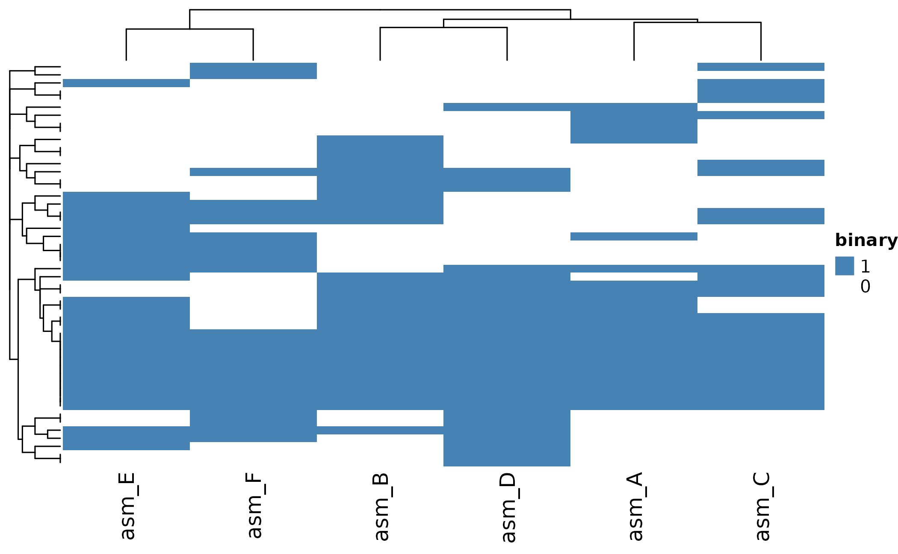
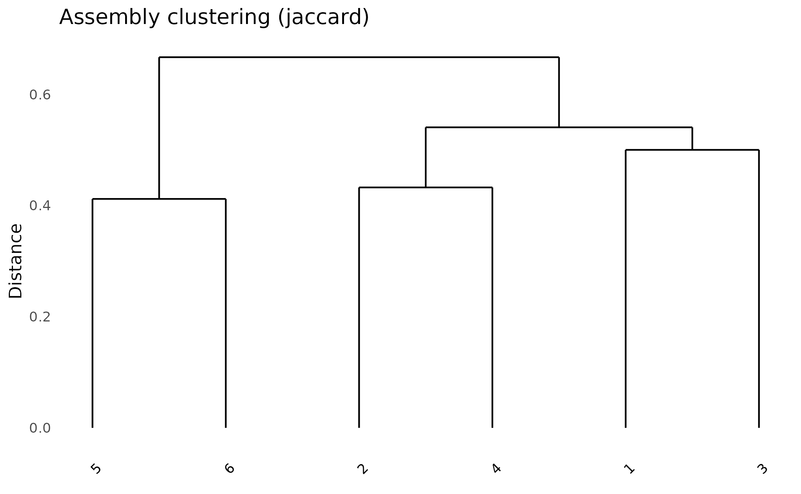
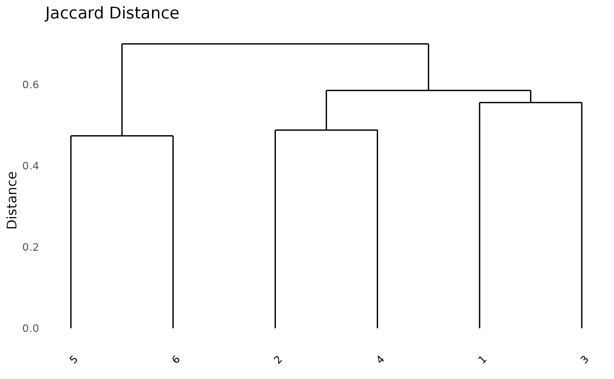

Introduction
While paneffectR was designed for effector analysis, it works equally well for general pan-genome comparisons with any protein FASTA files. This vignette demonstrates how to:
- Compare protein content across genome assemblies
- Identify core, accessory, and unique proteins
- Visualize pan-genome structure
No effector scores are required.
Pan-Genome Concepts
A pan-genome represents the complete gene content across a set of related genomes:
- Core genome: Genes present in all (or nearly all) genomes - essential functions
- Accessory genome: Genes present in some genomes - niche adaptation, lifestyle
- Unique genes: Present in only one genome - strain-specific features
paneffectR helps you explore this structure through presence/absence analysis.
Setup
library(paneffectR)
library(dplyr)
#>
#> Attaching package: 'dplyr'
#> The following objects are masked from 'package:stats':
#>
#> filter, lag
#> The following objects are masked from 'package:base':
#>
#> intersect, setdiff, setequal, unionLoading FASTA Files
For pan-genome analysis, you only need FASTA files:
# Get path to test data
testdata_dir <- system.file("testdata", package = "paneffectR")
# Load FASTAs only (no scores)
proteins <- load_proteins(
fasta_dir = testdata_dir,
pattern = "*.faa"
)
proteins
#> -- protein_collection --
#> 3 assemblies, 300 total proteins
#>
#> # A tibble: 3 × 3
#> assembly_name n_proteins has_scores
#> <chr> <int> <lgl>
#> 1 assembly1 100 FALSE
#> 2 assembly2 100 FALSE
#> 3 assembly3 100 FALSENote: Even though our test data has scores available, we’re ignoring them for this analysis.
Protein ID Requirements
Protein IDs must be unique across all assemblies. If
your FASTAs have generic headers like >protein_001,
you’ll need to prefix them with assembly names.
paneffectR validates this automatically:
# This would fail if IDs weren't unique
# (our test data already has unique IDs like "assembly1_000001")
head(proteins$assemblies[[1]]$proteins$protein_id)
#> [1] "assembly1_000039" "assembly1_000040" "assembly1_000094" "assembly1_000122"
#> [5] "assembly1_000164" "assembly1_000194"Clustering Proteins
Group proteins from different assemblies into orthogroups:
# Cluster using DIAMOND reciprocal best hits
clusters <- cluster_proteins(proteins, method = "diamond_rbh")For this vignette, we’ll use pre-computed clusters:
visual_dir <- system.file("testdata", "visual", package = "paneffectR")
clusters <- readRDS(file.path(visual_dir, "clusters_visual.rds"))
clusters
#> -- orthogroup_result (synthetic_visual) --
#> 50 orthogroupsUnderstanding the Results
# Orthogroup statistics
clusters$stats
#> # A tibble: 1 × 4
#> n_orthogroups n_singletons n_proteins_clustered n_assemblies
#> <int> <int> <int> <int>
#> 1 50 0 160 6
# How many singletons (unique proteins)?
n_singletons(clusters)
#> [1] 0
# Singletons per assembly
singletons_by_assembly(clusters)
#> # A tibble: 0 × 2
#> # ℹ 2 variables: assembly <chr>, n_singletons <int>Building the Presence/Absence Matrix
Create a binary matrix showing which orthogroups are in which assemblies:
pa <- build_pa_matrix(clusters, type = "binary")
pa
#> -- pa_matrix (binary) --
#> 50 orthogroups x 6 assemblies
#> Sparsity: 46.7%
# Include singletons (default) or exclude them
pa_no_singletons <- build_pa_matrix(
clusters,
type = "binary",
exclude_singletons = TRUE
)
cat("With singletons:", nrow(pa$matrix), "orthogroups\n")
#> With singletons: 50 orthogroups
cat("Without singletons:", nrow(pa_no_singletons$matrix), "orthogroups\n")
#> Without singletons: 50 orthogroupsAnalyzing Pan-Genome Structure
Core Genome
Proteins present in all assemblies:
n_assemblies <- ncol(pa$matrix)
presence_count <- rowSums(pa$matrix)
# Core = present in all
core_og <- names(presence_count[presence_count == n_assemblies])
cat("Core orthogroups:", length(core_og), "of", length(presence_count), "\n")
#> Core orthogroups: 10 of 50
cat("Core percentage:", round(100 * length(core_og) / length(presence_count), 1), "%\n")
#> Core percentage: 20 %Accessory Genome
Proteins present in some but not all assemblies:
# Accessory = present in 2 to (n-1) assemblies
accessory_og <- names(presence_count[presence_count > 1 & presence_count < n_assemblies])
cat("Accessory orthogroups:", length(accessory_og), "\n")
#> Accessory orthogroups: 30
cat("Accessory percentage:", round(100 * length(accessory_og) / length(presence_count), 1), "%\n")
#> Accessory percentage: 60 %Pan-Genome Summary
pan_summary <- data.frame(
Category = c("Core", "Accessory", "Unique", "Total"),
Count = c(length(core_og), length(accessory_og), length(unique_og), length(presence_count)),
Percentage = c(
round(100 * length(core_og) / length(presence_count), 1),
round(100 * length(accessory_og) / length(presence_count), 1),
round(100 * length(unique_og) / length(presence_count), 1),
100
)
)
pan_summary
#> Category Count Percentage
#> 1 Core 10 20
#> 2 Accessory 30 60
#> 3 Unique 10 20
#> 4 Total 50 100Visualizing the Pan-Genome
Heatmap
The heatmap shows presence (colored) and absence (white) patterns:
ht <- plot_heatmap(
pa,
cluster_rows = TRUE,
cluster_cols = TRUE,
show_row_names = FALSE,
color = c("white", "steelblue")
)
ComplexHeatmap::draw(ht)
UpSet Plot
UpSet plots excel at showing intersections - which orthogroups are shared between which combinations of assemblies:
# Show all intersections with at least 1 orthogroup
plot_upset(pa, min_size = 1)
#> Warning: `aes_string()` was deprecated in ggplot2 3.0.0.
#> ℹ Please use tidy evaluation idioms with `aes()`.
#> ℹ See also `vignette("ggplot2-in-packages")` for more information.
#> ℹ The deprecated feature was likely used in the UpSetR package.
#> Please report the issue to the authors.
#> This warning is displayed once per session.
#> Call `lifecycle::last_lifecycle_warnings()` to see where this warning was
#> generated.
#> Warning: Using `size` aesthetic for lines was deprecated in ggplot2 3.4.0.
#> ℹ Please use `linewidth` instead.
#> ℹ The deprecated feature was likely used in the UpSetR package.
#> Please report the issue to the authors.
#> This warning is displayed once per session.
#> Call `lifecycle::last_lifecycle_warnings()` to see where this warning was
#> generated.
#> Warning: The `size` argument of `element_line()` is deprecated as of ggplot2 3.4.0.
#> ℹ Please use the `linewidth` argument instead.
#> ℹ The deprecated feature was likely used in the UpSetR package.
#> Please report the issue to the authors.
#> This warning is displayed once per session.
#> Call `lifecycle::last_lifecycle_warnings()` to see where this warning was
#> generated.
The bars show: - How many orthogroups are unique to each assembly - How many are shared between specific combinations - How many are in the core (all assemblies)
Assembly Dendrogram
Cluster assemblies by their shared protein content:
plot_dendro(pa, distance_method = "jaccard")
Try different distance metrics:
# Jaccard: good for presence/absence
plot_dendro(pa, distance_method = "jaccard") +
ggplot2::ggtitle("Jaccard Distance")
Comparing Assemblies
Pairwise Similarity
Calculate Jaccard similarity between all pairs:
# Simple Jaccard calculation
jaccard <- function(a, b) {
intersection <- sum(a == 1 & b == 1)
union <- sum(a == 1 | b == 1)
intersection / union
}
# Calculate for all pairs
assemblies <- colnames(pa$matrix)
n <- length(assemblies)
sim_matrix <- matrix(0, n, n, dimnames = list(assemblies, assemblies))
for (i in 1:n) {
for (j in 1:n) {
sim_matrix[i, j] <- jaccard(pa$matrix[, i], pa$matrix[, j])
}
}
round(sim_matrix, 2)
#> asm_A asm_B asm_C asm_D asm_E asm_F
#> asm_A 1.00 0.49 0.50 0.53 0.44 0.33
#> asm_B 0.49 1.00 0.54 0.57 0.53 0.38
#> asm_C 0.50 0.54 1.00 0.46 0.46 0.43
#> asm_D 0.53 0.57 0.46 1.00 0.49 0.42
#> asm_E 0.44 0.53 0.46 0.49 1.00 0.59
#> asm_F 0.33 0.38 0.43 0.42 0.59 1.00Which Assemblies Share the Most?
# Find most similar pair (excluding diagonal)
sim_matrix_upper <- sim_matrix
diag(sim_matrix_upper) <- 0
max_idx <- which(sim_matrix_upper == max(sim_matrix_upper), arr.ind = TRUE)[1, ]
cat("Most similar pair:",
assemblies[max_idx[1]], "and", assemblies[max_idx[2]],
"\nJaccard similarity:", round(max(sim_matrix_upper), 3), "\n")
#> Most similar pair: asm_F and asm_E
#> Jaccard similarity: 0.588Assembly-Specific Analysis
Proteins Unique to One Assembly
# Get singletons with assembly information
singletons_df <- singletons_by_assembly(clusters)
singletons_df
#> # A tibble: 0 × 2
#> # ℹ 2 variables: assembly <chr>, n_singletons <int>
# Which assembly has the most unique proteins?
singletons_df %>%
arrange(desc(n_singletons))
#> # A tibble: 0 × 2
#> # ℹ 2 variables: assembly <chr>, n_singletons <int>Exporting Results
# Export presence/absence matrix as CSV
write.csv(
as.data.frame(pa),
"pan_genome_matrix.csv"
)
# Export orthogroup membership
write.csv(
clusters$orthogroups,
"orthogroup_membership.csv",
row.names = FALSE
)
# Export pan-genome summary
write.csv(
pan_summary,
"pan_genome_summary.csv",
row.names = FALSE
)Summary
Key steps for pan-genome analysis:
- Load FASTA files with
load_proteins(fasta_dir) - Cluster into orthogroups with
cluster_proteins() - Build binary matrix with
build_pa_matrix(type = "binary") - Analyze core/accessory/unique proportions
- Visualize with
plot_heatmap(),plot_upset(),plot_dendro()
Next Steps
- Getting Started - Basic workflow overview
- Effector Analysis - Working with omnieff scores
- Algorithm Deep Dive - Technical details on clustering